ARGOSManutenção
ARGOSManutenção
Manutenção da rede no Tocantins: vegetação, interrupções, inspeção e OS
- Mapa da NAE por município, polo e alimentador
- Dados da Crítica de jan a ago/2026
- Apresentação de 10 minutos
lgrsv.github.io/vera-vegeta-o-back/teste
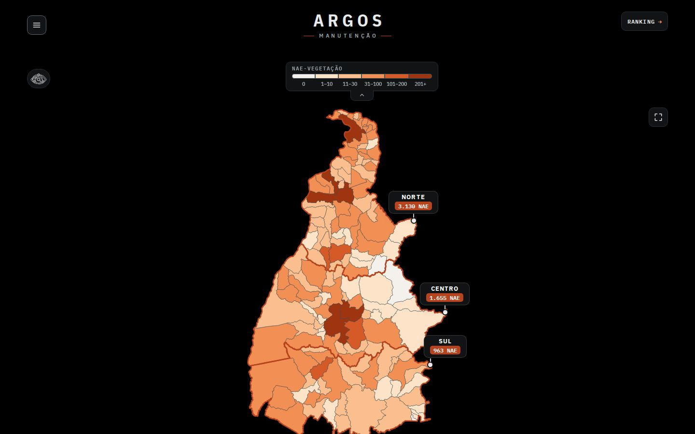
Abertura
O problema
- Árvore e eucalipto na rede derrubam alimentadores
- 5.748 ocorrências (NAE) de jan a ago/2026 no Tocantins: Norte 3.130, Centro 1.655, Sul 963
- As equipes de manutenção não alcançam tudo ao mesmo tempo
- Pergunta: onde agir primeiro?
lgrsv.github.io/vera-vegeta-o-back/teste

Abertura
O que é o ARGOS
- Rede de média tensão do GIS (KML) dividida em trechos T1, T2 e T3 (319 alimentadores, 91.534,6 km)
- Ocorrências da Crítica, cada uma no trecho certo
- OS de limpeza de faixa, inspeção e manutenção no mesmo mapa
- Site no navegador, também no celular, sem instalar nada
lgrsv.github.io/vera-vegeta-o-back/teste

Mapa
Estado: o Tocantins pintado pela NAE
- Municípios coloridos pela NAE-Vegetação em 6 faixas: 0, 1 a 10, 11 a 30, 31 a 100, 101 a 200 e 201 ou mais
- Bandeirinhas pretas saem do contorno de cada regional: Norte 3.130, Centro 1.655, Sul 963 (soma 5.748)
- A legenda tem título e orelhinha: recolhida, tira os números do mapa e deixa só a cor
- No alto: menu ☰, olho (busca), Ranking e tela cheia
lgrsv.github.io/vera-vegeta-o-back/teste

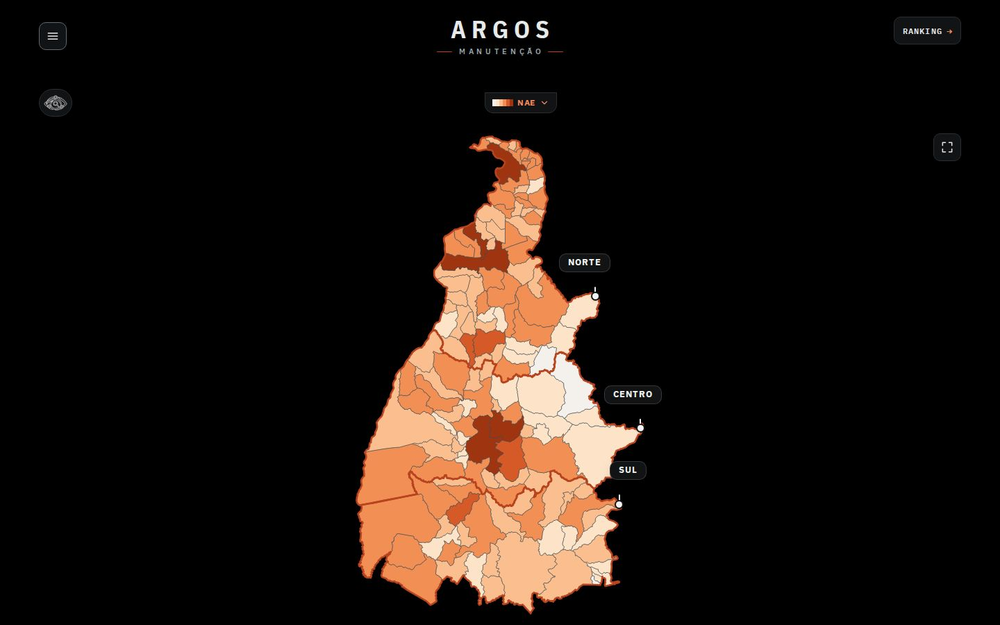
Mapa
Regional e polo: do território às equipes
- Clicar na bandeirinha abre a regional: as outras saem e os polos aparecem na barra, cada um com cor e NAE
- Norte: Augustinópolis 1.352, Araguaína 1.235, Guaraí 543. Centro: Palmas 434, Paraíso 588, Porto Nacional 633. Sul: Gurupi 702, Dianópolis 261
- Ao abrir o polo, todos os municípios têm rótulo com nome e NAE (dentro, ou ao lado com um fio)
- A trilha "Tocantins › Norte › Augustinópolis" volta direto a qualquer passo
lgrsv.github.io/vera-vegeta-o-back/teste
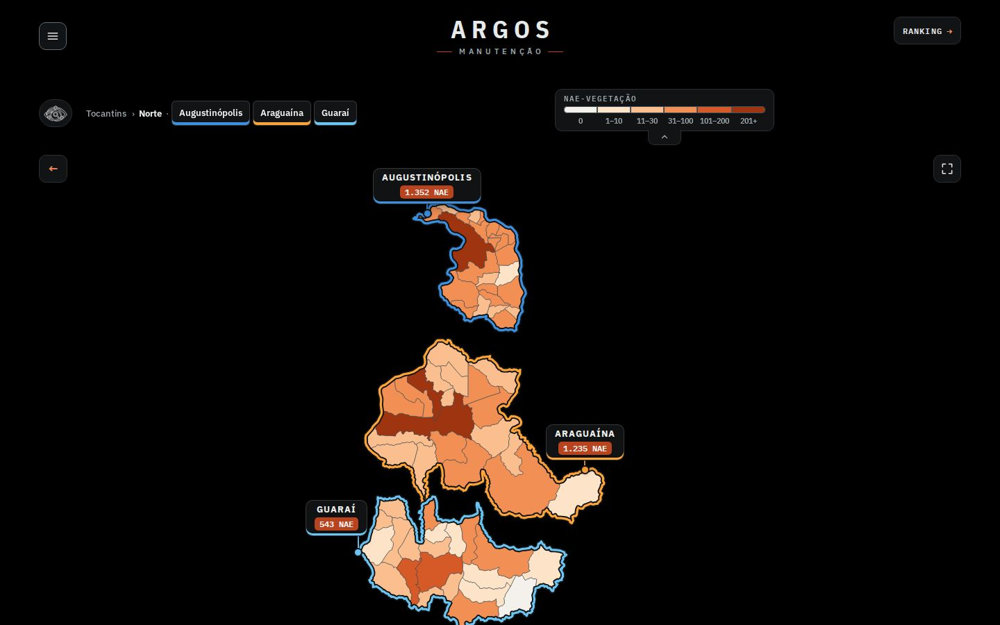
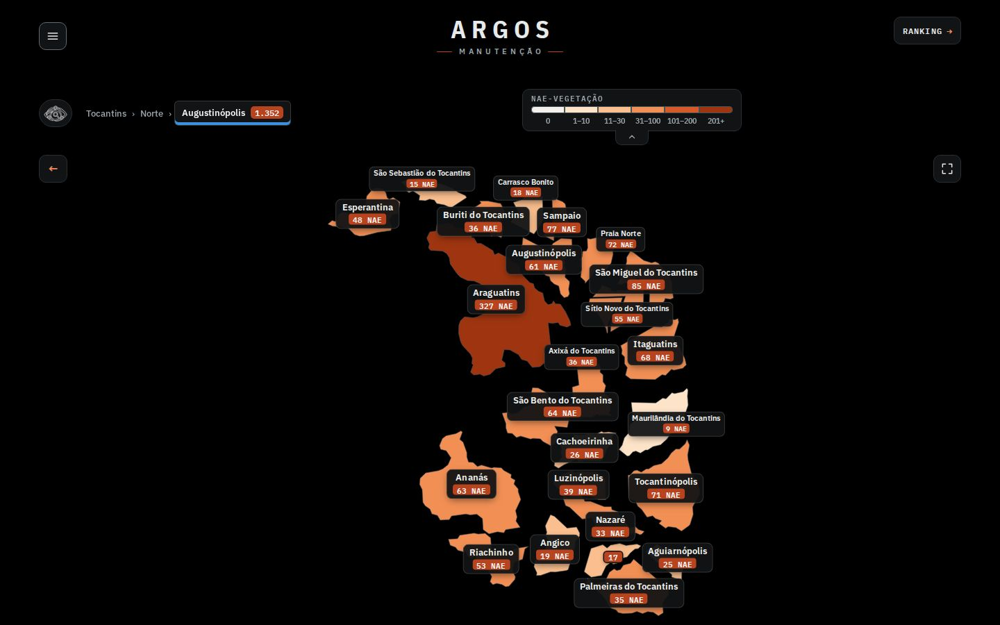
Mapa
Município: a rede de cada alimentador
- Clicar no município (ex.: Araguatins, 327 NAE) mostra a rede de cada alimentador em azul; o resto fica apagado
- A lista abre embaixo do olho: 9 alimentadores, cada um com miniatura da rede, código e NAE (LD03005098 187, LD03014045 186, LD02109039 121, LD03109039 101)
- Passar o mouse numa linha destaca a rede; um clique abre a página do alimentador
- No celular a lista abre sobre o mapa
lgrsv.github.io/vera-vegeta-o-back/teste
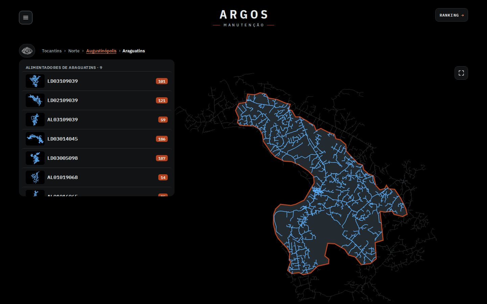
Mapa
Foco no alimentador e como voltar
- Escolher o alimentador na busca leva o mapa até ele (regional, polo, município) e aproxima a rede inteira
- A trilha ganha o último passo: Tocantins › Norte › Augustinópolis › Araguatins › LD03109039
- A seta ← e a tecla Esc sobem um nível por vez; setas do teclado andam pelos municípios e Enter abre
- Clicar na rede aproximada abre a página do alimentador (T1/T2/T3, NAE por trecho, camadas)
lgrsv.github.io/vera-vegeta-o-back/teste
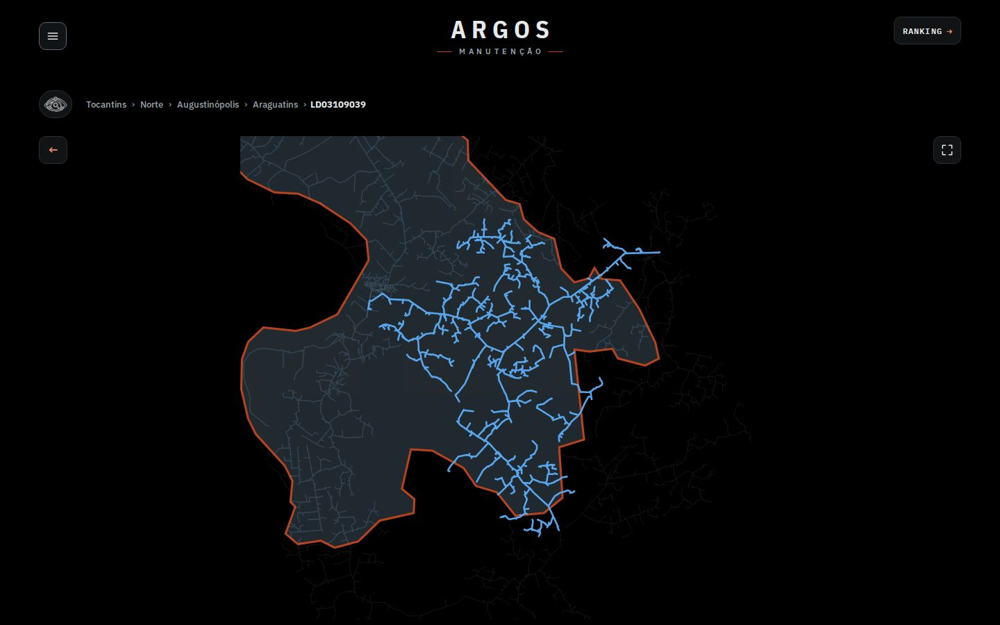
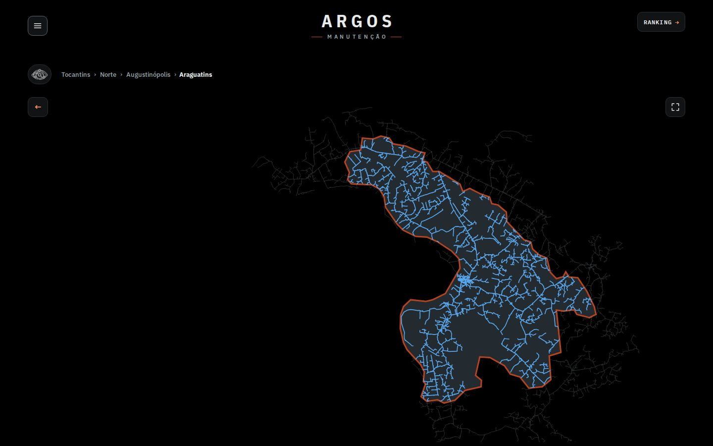
Mapase sobrar tempo
Tela cheia e tema claro
- Botão de tela cheia no canto direito do mapa: a barra, a legenda e o mapa cobrem a tela; Esc sai
- Night shift: tema claro pelo menu ☰ ou com Shift+K, bom para projetor e impressão
- Mesmos dados e mesma navegação nos dois temas
- A escolha de tema e a de legenda ficam guardadas no navegador
lgrsv.github.io/vera-vegeta-o-back/teste
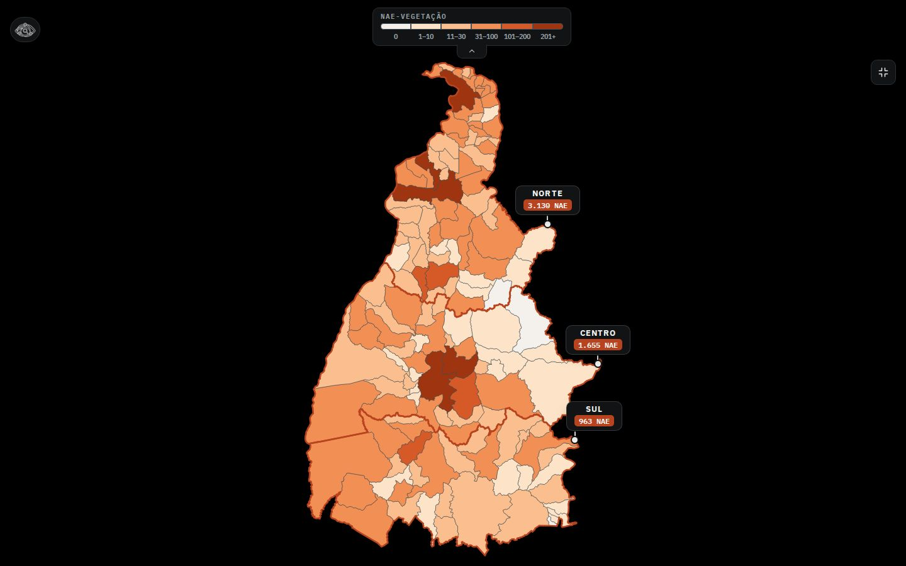
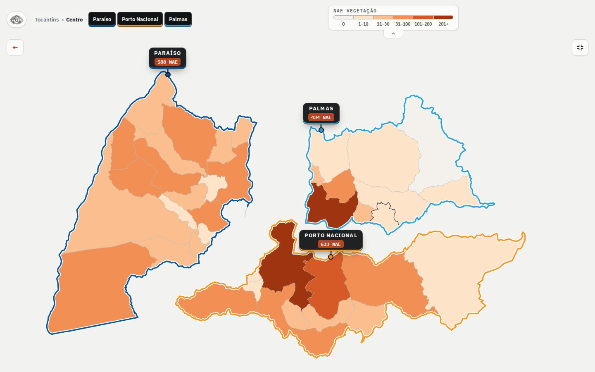
Busca e menu
Busca atrás do olho do ARGOS
- Tocar no olho (canto esquerdo, acima do mapa) abre o campo; a tecla "/" também abre
- Sem digitar: as 3 regionais (Norte 3 polos e 65 municípios, Centro 3 e 40, Sul 2 e 34) e os alimentadores com mais NAE
- Digitando: polos, municípios, alimentadores e ativos; ignora maiúsculas e acentos. "Palmas": polo (434 NAE) e município (46 alimentadores, 336 NAE)
- Alimentador: AL03037009, SE Guaraí I, 2 municípios, 212 km, 37 NAE; escolher leva o mapa até ele
lgrsv.github.io/vera-vegeta-o-back/teste
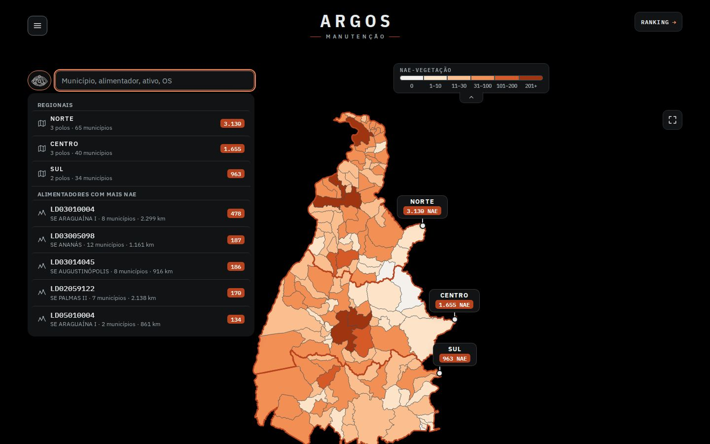
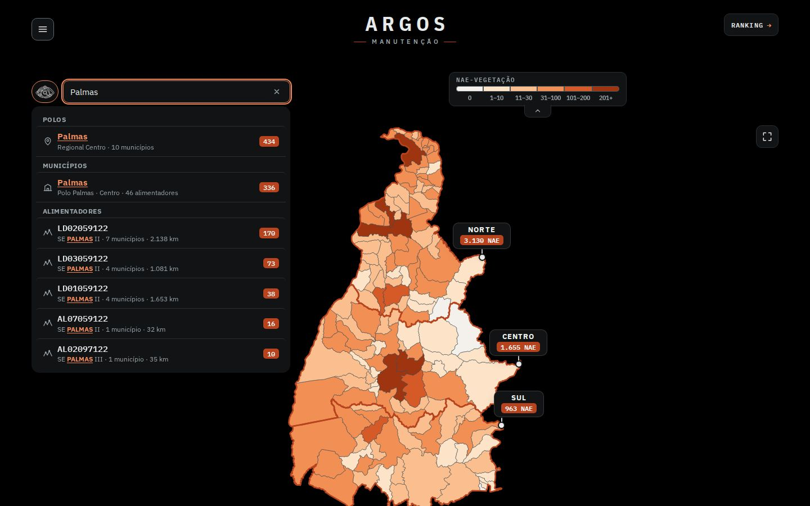
Busca e menu
Ativo e OS
- Ativo: o código completo de chave, religador, transformador ou poste. Ex.: 7933799001 é um religador, T2-A do LD01072001 (SE Porto Nacional), "início do T2-A, fim do T2"
- OS no formato nº/ano: 943/2022 mostra 6 OS de equipes diferentes; com a equipe (ETO-RD-PO 000353/2026) sobram 2 registros no LD02047073
- Cada resultado traz base, data ou situação, alimentador e subestação; "Ver no mapa" ou "Abrir no mapa do alimentador"
- O alimentador abre centrado no ponto, com a etiqueta ATIVO; o endereço pode ser enviado a outra pessoa
lgrsv.github.io/vera-vegeta-o-back/teste
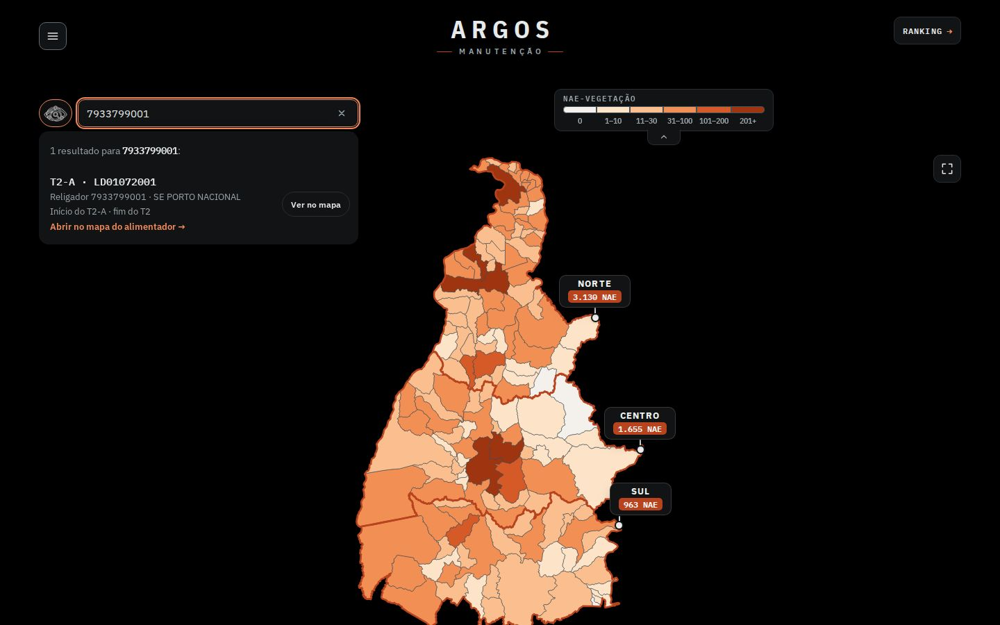
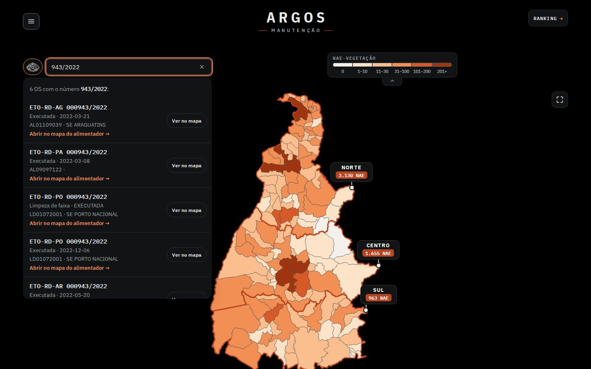
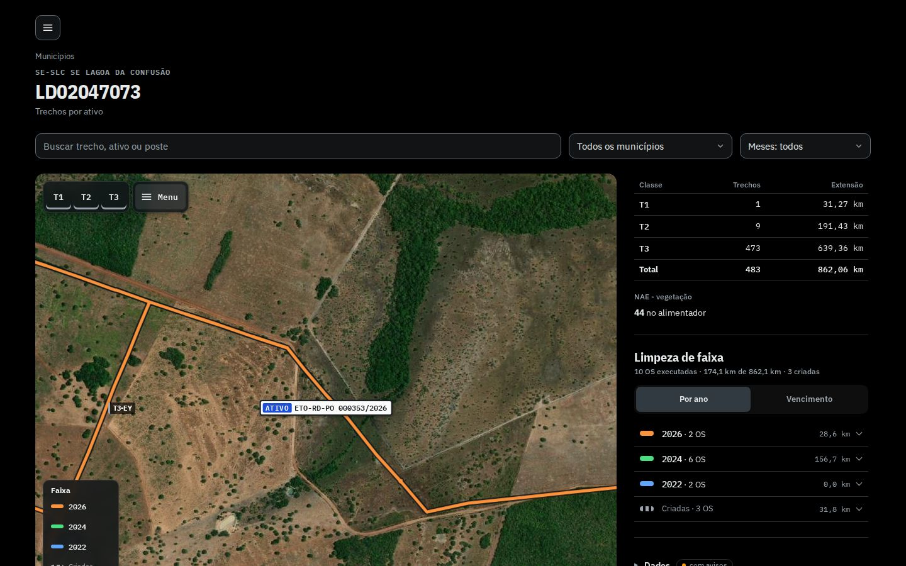
Busca e menuse sobrar tempo
Menu ☰
- Menu no canto superior esquerdo de todas as páginas
- Atualização de dados: arrastar a base; mostra a data da última atualização de cada uma
- Night shift (Shift+K) e, em Relatórios: legenda T1/T2/T3, Relatório de validação e manifesto.json (municípios e alimentadores em JSON)
- Script KML → trechos (.zip), 94 KB, divide o KML no formato do Daimon em T1/T2/T3 e vem com LEIA-ME
lgrsv.github.io/vera-vegeta-o-back/teste
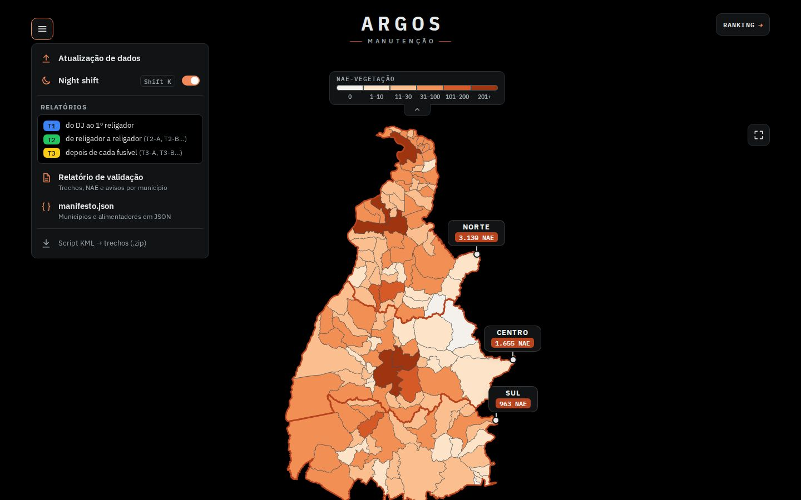
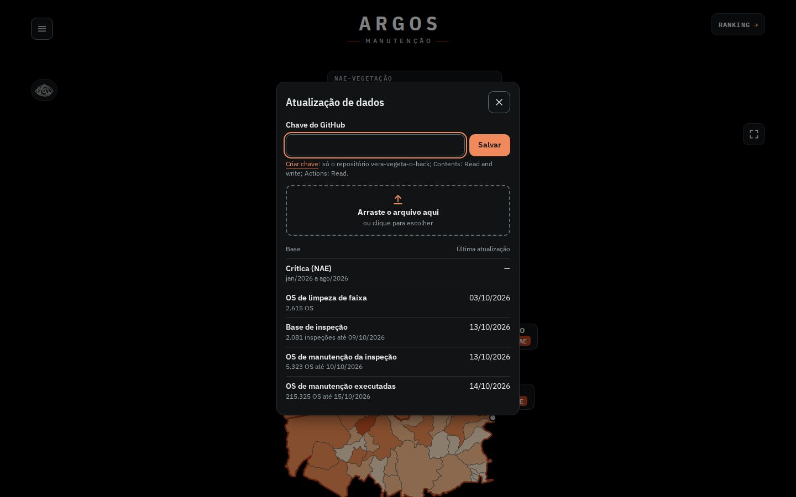
Alimentador
A página do alimentador (LD01072001)
- Cabeçalho com a subestação (SE-2PNA, SE Porto Nacional), busca de trecho, ativo ou poste, filtro de município e botão Meses
- Mapa de satélite com a rede em trechos; os botões T1, T2 e T3 ligam e desligam cada classe; o Menu liga as camadas
- Tabela: 199 trechos e 153,98 km (T1 1 com 13,02 km, T2 3 com 25,97 km, T3 195 com 114,99 km)
- NAE de vegetação: 23 no alimentador. Limpeza de faixa: 6 OS executadas, 24,2 km de 154,0 km, 3 criadas
lgrsv.github.io/vera-vegeta-o-back/teste
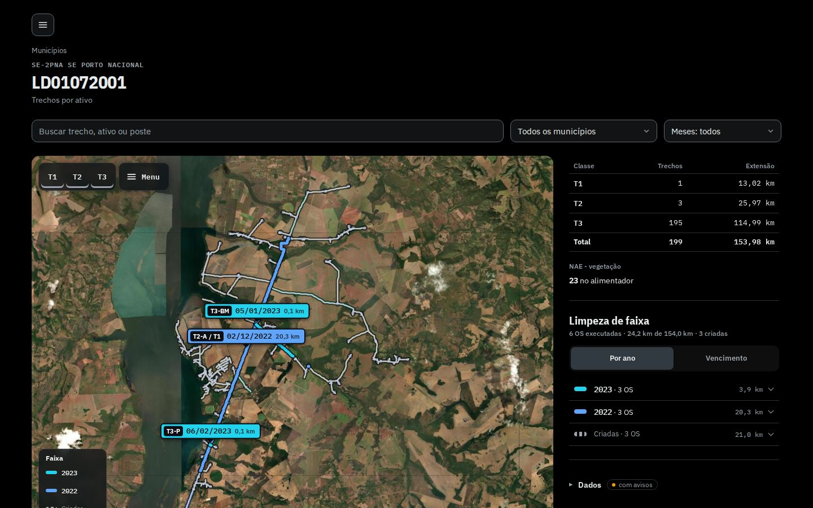
Alimentador
T1, T2 e T3, com chave de início e de fim
- T1: do disjuntor (DJ) ao 1º religador. T2: de religador a religador (T2-A, T2-B…). T3: cada fusível abre um T3 (T3-A, T3-B…); não existe T4
- T1 do LD01072001: DJ LD01072001 até 7927413001, 13,02 km, 256 vãos. T2-A: 7933799001 até 7954762001, 16,58 km, 265 vãos
- T3-BC: começa no fusível 0309785001 e termina no fim de linha (poste 31175389), 3,85 km
- Pinos INÍCIO (verde) e FIM (vermelho) no mapa; "Vem de" e "Derivações" navegam entre trechos; Ctrl (⌘) + clique soma trechos
- Sem religador não há T2: AL03037009 tem T1 de 29,71 km e 170 T3
lgrsv.github.io/vera-vegeta-o-back/teste
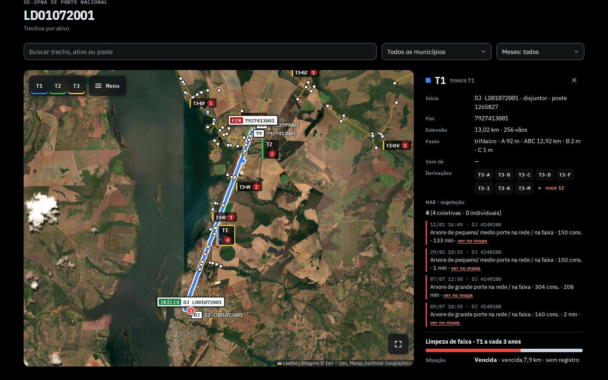
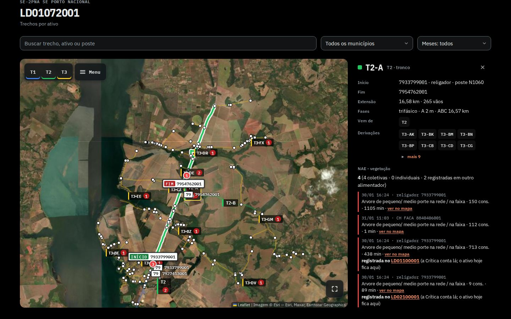
Alimentador
NAE por trecho e por mês
- NAE de vegetação (Meio Ambiente, árvore ou eucalipto), da Crítica, cai no trecho do ativo que atuou; o número vermelho aparece no rótulo do trecho
- T1 do LD01072001: 4 desarmes do DJ por árvore (150, 150, 304 e 160 consumidores), cada um com data e hora
- Meses (jan a ago/2026): jan/2026 tem 9 das 23 NAE e o T2-A lidera (4)
- NAE registrada em outro alimentador é indicada com link (2 das 4 do T2-A)
- Lista por maior NAE, com início → fim, km e ano da última limpeza
lgrsv.github.io/vera-vegeta-o-back/teste
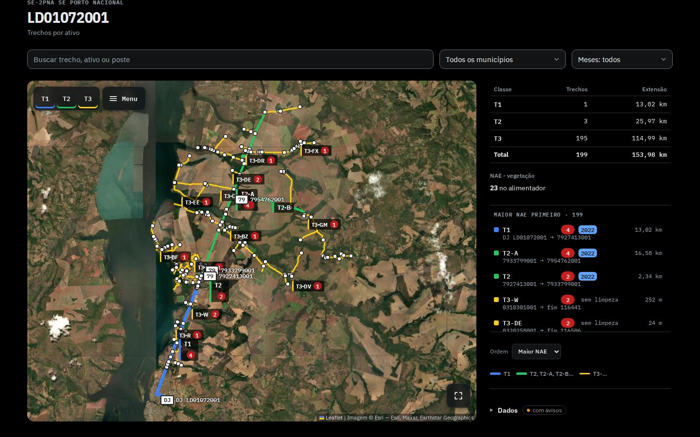
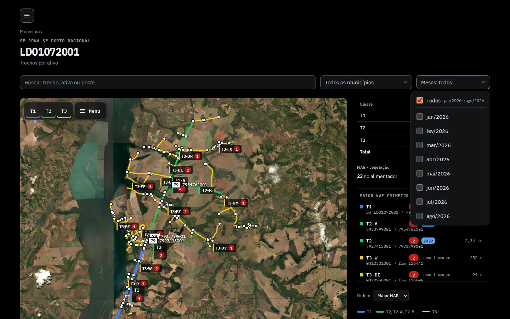
Alimentador
Camada Faixa: limpeza de faixa
- Menu do mapa › Faixa, em duas vistas: Por ano (uma cor por ano; cinza sem limpeza) e Vencimento (T1 a cada 3 anos, T2 a cada 4, T3 a cada 5)
- LD01072001, vencimento: em dia 3,9 km, vence em até 12 meses 12,4 km, vencida 7,9 km, sem registro 129,7 km
- Criadas (tracejado): 3 OS, 21,0 km. Pendentes (pontilhado), no LD02010004: 22 executadas, 4 criadas, 6 pendentes
- No T1 do LD01072001: 7,9 km vencidos e 5,1 km sem registro dos 13,02 km: candidato claro à limpeza de faixa
lgrsv.github.io/vera-vegeta-o-back/teste
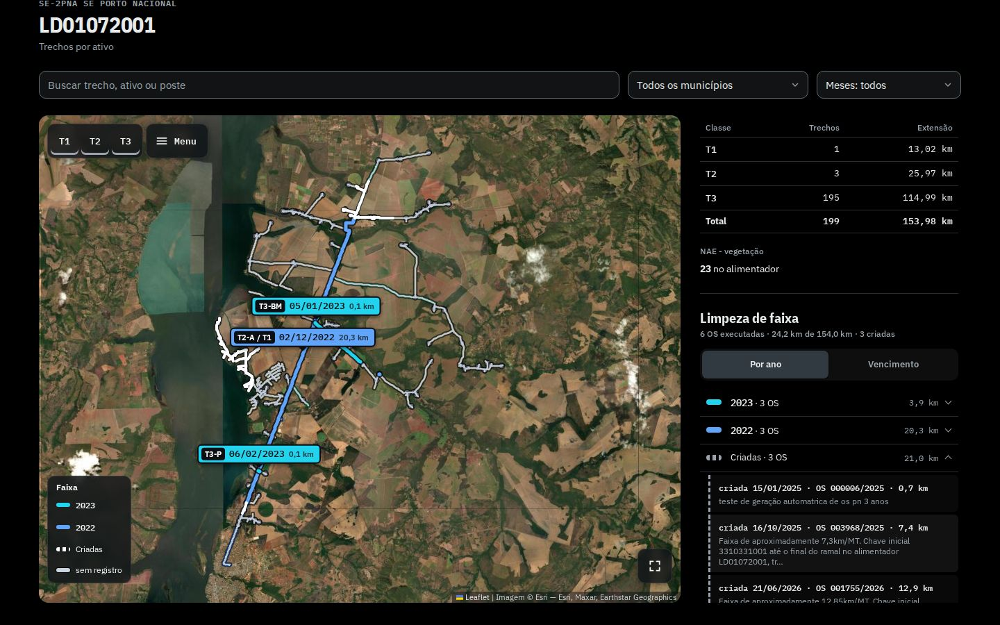
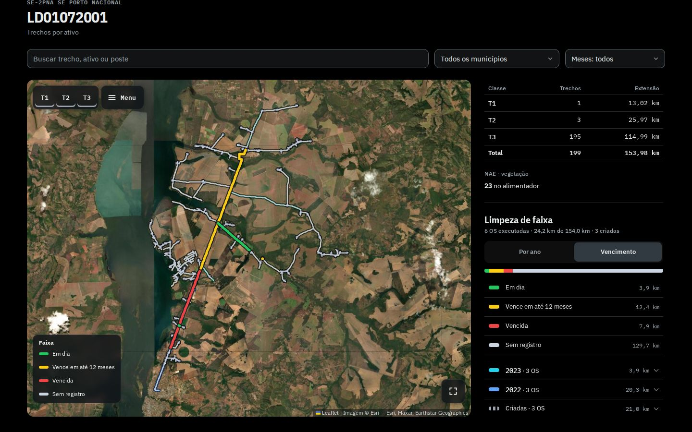
Alimentador
Camadas Inspeção, Insp→manut e Manutenção
- Menu do mapa: Faixa, Inspeção, Insp→manut e Manutenção, quantas quiser ao mesmo tempo, cada uma com legenda e bloco no painel
- Inspeção: rede inspecionada na cor do ano; LD01072001 tem 21 inspeções, 34,0 km de 154,0 km
- Manutenção executada: um losango por ativo, na cor do ano da última OS; 825 OS em 415 ativos
- Insp→manut: OS de manutenção geradas pela inspeção, por situação (153 no prazo); cada OS mostra "INSP 000071/2026 → MANUT 002375/2026"
lgrsv.github.io/vera-vegeta-o-back/teste
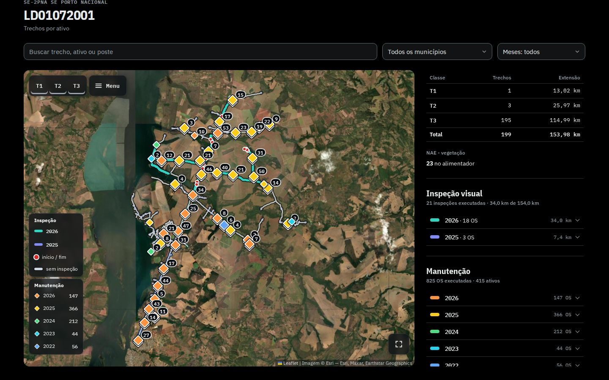
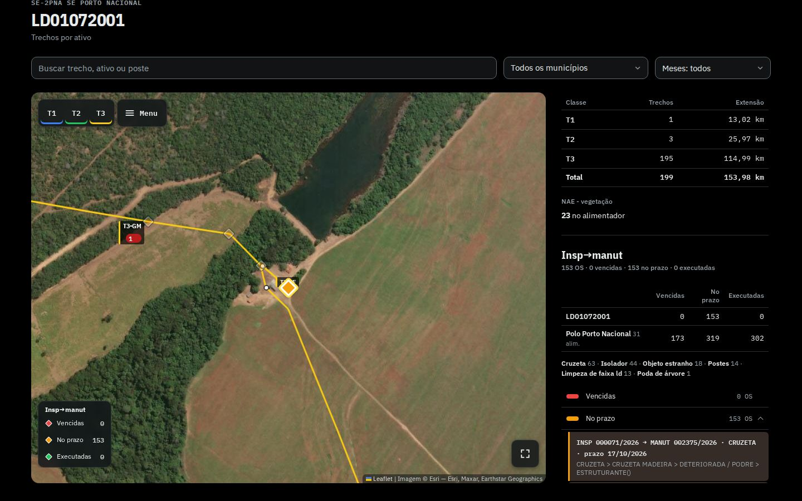
Alimentadorse sobrar tempo
Tela cheia, croqui em Excel e KMZ
- Tela cheia (botão no canto inferior direito do mapa; Esc sai): o painel vira gaveta e o satélite chega ao zoom 19
- Croqui da faixa (Dados › Downloads › Faixa): janela já preenchida com alimentador, trecho, extensão, município, chaves inicial e final em UTM e imagem; você completa tipo, OS, obra e deslocamento
- Baixa o Excel no modelo da Energisa; vale para o trecho selecionado, vários trechos ou o alimentador inteiro
- Downloads: Excel por camada (OS de faixa, inspeções, OS da inspeção, 825 OS de manutenção) e KMZ para o Google Earth
lgrsv.github.io/vera-vegeta-o-back/teste
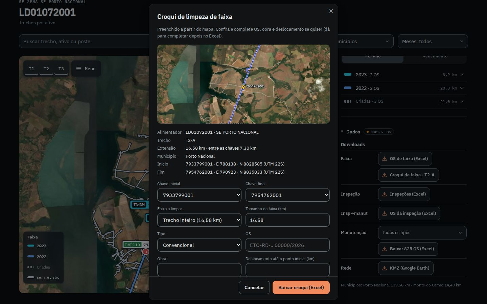
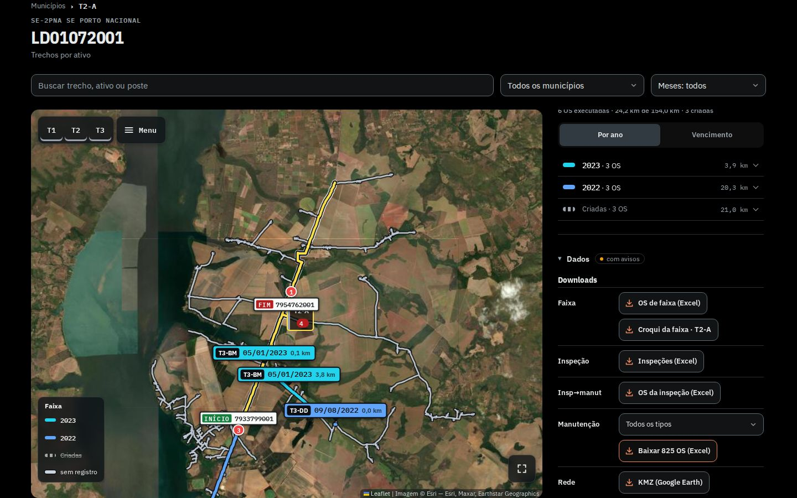
Ranking
Ranking por polo
- Página
polos/(botão Ranking): ETO (Tocantins), regionais e 8 polos; os números dos botões são os mesmos do mapa (5.748, Norte 3.130, Centro 1.655, Sul 963) - ETO: 302 alimentadores, 3.908 trechos com NAE, 91.477,0 km, 139 municípios
- Colunas: NAE, consumidores, CHI (h), km, NAE/100 km, limpeza no prazo e última limpeza; abas Alimentadores e Trechos (T1 101, T2 257, T3 3.550)
- 1º LD03010004: 478 NAE, 17.002 consumidores, 34% da limpeza no prazo. Polo Araguaína: 1.235 NAE, 62 alimentadores, 814 trechos
- O endereço guarda a visão (
#araguaina,#eto/trechos/T3)
lgrsv.github.io/vera-vegeta-o-back/teste
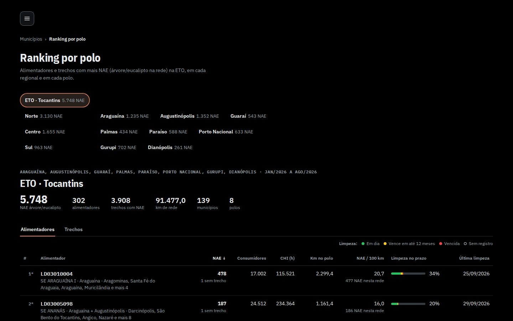
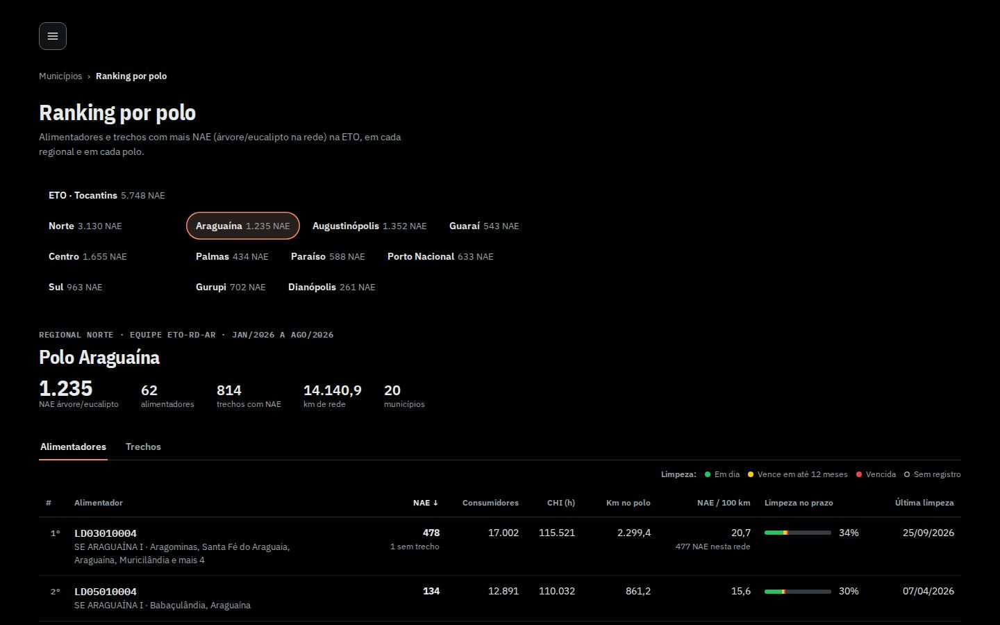
Ranking
NAE e NAE/100 km
- NAE: ocorrências de vegetação da Crítica; NAE/100 km: NAE da mesma rede dividida pelos km, vezes 100
- "NAE nesta rede" ajusta a conta: sai a NAE cujo ativo hoje está em outro alimentador no GIS e entra a de outro alimentador cujo ativo está aqui
- Polo Araguaína: AL02096004 lidera com 28,0 (NAE 82, 74 nesta rede, 264,3 km); LD03010004 tem 478 NAE e 20,7 (2.299,4 km)
- Use o índice junto com a NAE absoluta; trecho muito curto distorce a taxa
- "Como contamos", no pé da página, traz o método e a regra de limpeza (T1 3 anos, T2 4, T3 5)
lgrsv.github.io/vera-vegeta-o-back/teste
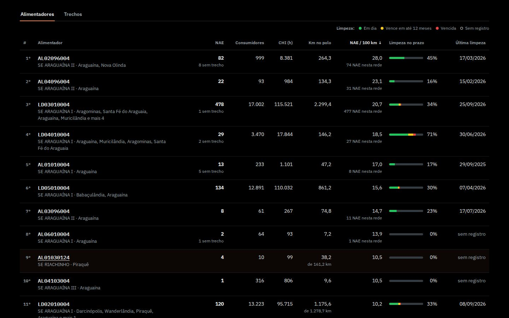
Dados
Relatório de validação
relatorio.html(menu ☰ › Relatórios): uma tabela por município com polo, SE, trechos, km, religadores, fusíveis, NAE associada e não associada, avisos e status- 139 municípios; 319 alimentadores processados sem falha (91.534,6 km, 71.314 trechos)
- 306 alimentadores com aviso (revisar): vão na divisa entre municípios, alimentador sem 2º religador, seccionamento, trechos a revisar
- 3 falhas críticas (AL01102271, LD01414015, LD02424015: classificação colapsada, 1 trecho para centenas de km) e 18 sem município com 100 m ou mais de rede ficam de fora
lgrsv.github.io/vera-vegeta-o-back/teste
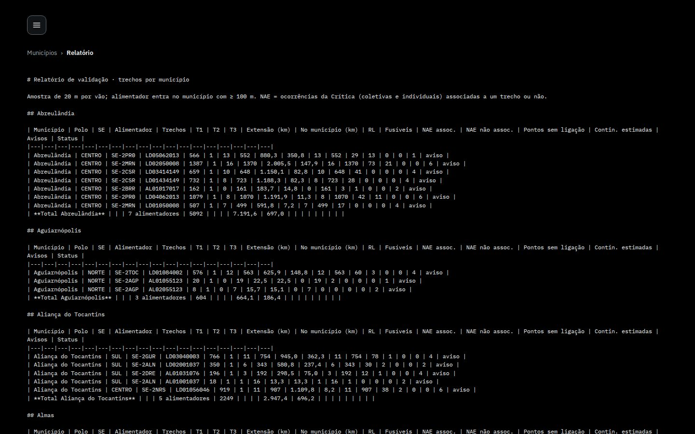
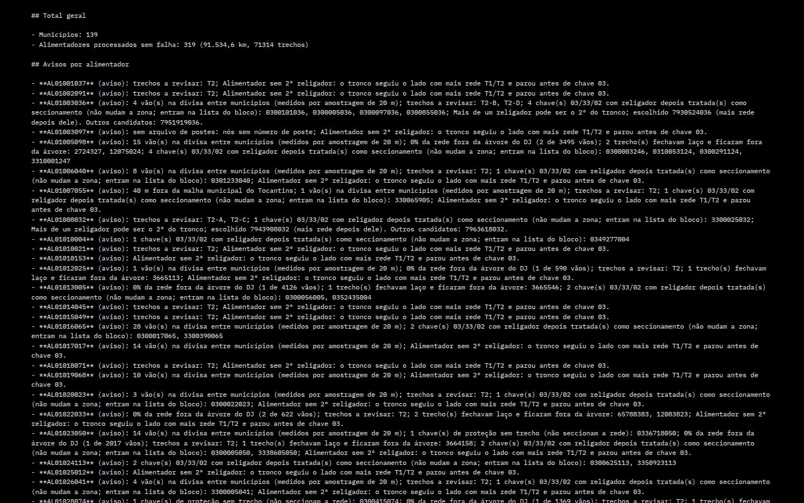
Dados
De onde vem cada número e como atualizar
- KML do GIS (rede e chaves, convertido por camadas; única fonte de T1/T2/T3; também os trafos e onde o ativo está hoje), Crítica (um arquivo por mês), planilha de polos (DCMD) e bases de OS
- Hoje: limpeza 2.615 OS (03/10), inspeção 2.081 (até 09/10), manutenção da inspeção 5.323 (até 10/10), executadas 215.325 (até 15/10), Crítica jan a ago/2026
- Atualizar: ☰ › Atualização de dados › arrastar o arquivo; a chave do GitHub é pedida uma vez e fica só no navegador
- A automação leva uns 5 minutos; se der erro, não publica nada
lgrsv.github.io/vera-vegeta-o-back/teste
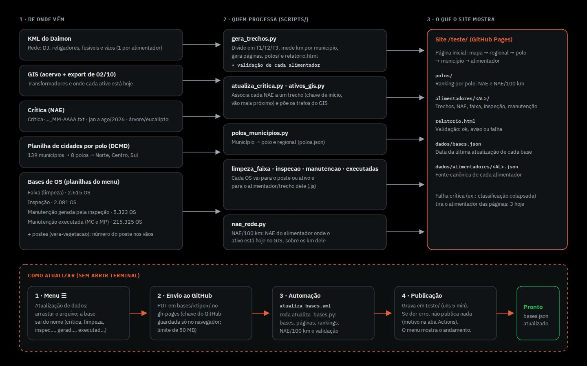
Fechamento
Benefícios
- Decisão por trecho, entre duas chaves, e não pelo alimentador inteiro
- NAE, limpeza, inspeção e manutenção no mesmo lugar
- Chave de início e fim e croqui Excel prontos para a equipe de campo
- Relatório de validação transparente e atualização mensal pelo menu
lgrsv.github.io/vera-vegeta-o-back/teste
Fechamento
Próximos passos e perguntas
- Carregar a Crítica de setembro e manter a rotina mensal pelo menu
- Piloto com um polo: Augustinópolis (1.352 NAE) ou Araguaína (1.235)
- Validar com as equipes ETO-RD os trechos a revisar e a posição das OS
- Definir responsável e calendário de atualização
- Perguntas: o que falta para o uso diário da manutenção?
lgrsv.github.io/vera-vegeta-o-back/teste